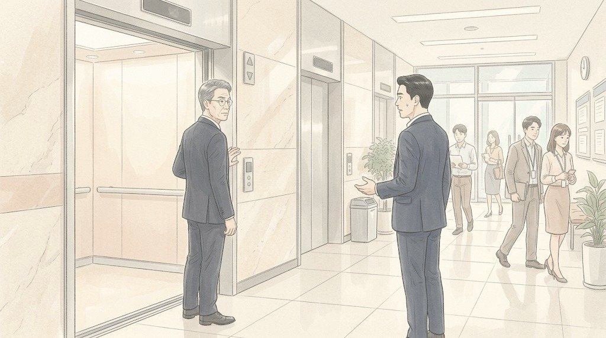
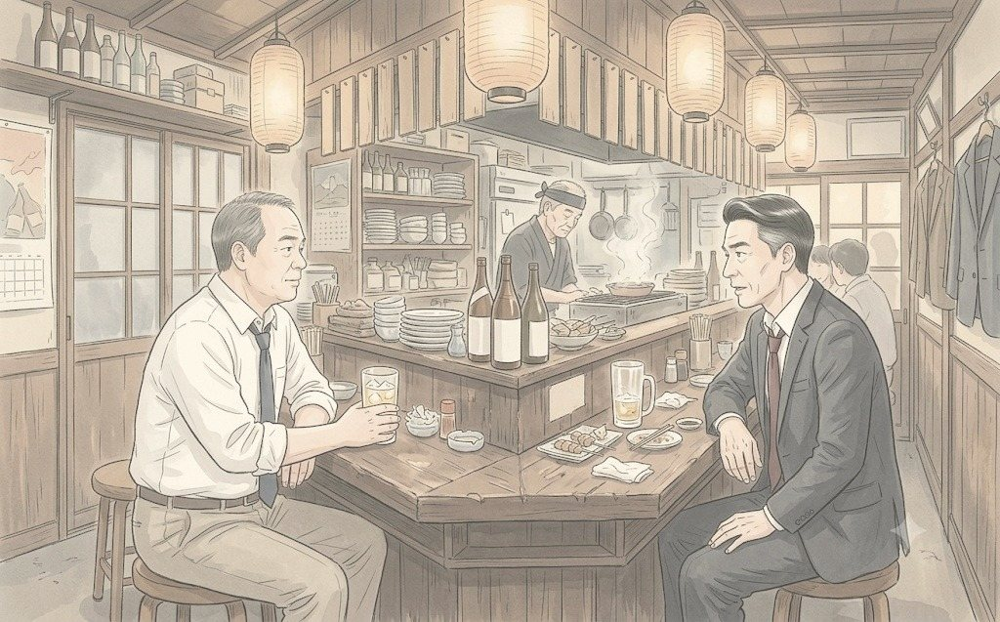
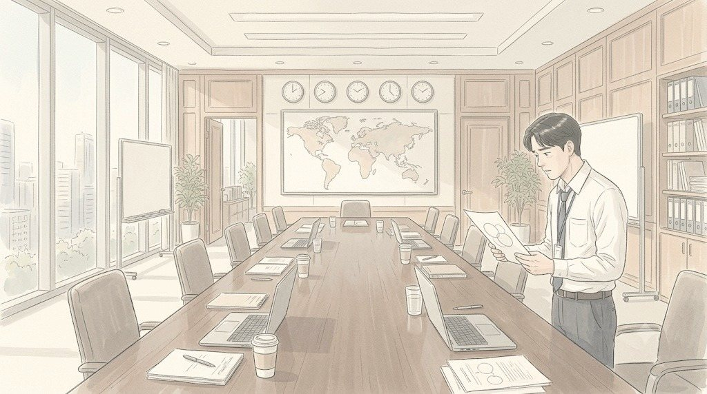

월요일 오전 10시. 28층 대표 회의실.
남자는 회의실에 들어오자마자 노트북을 열고 HDMI 선을 꽂았다. 누가 시키지 않았는데도 화면이 그의 노트북으로 바뀌었다. 첫 장에 영어 한 줄이 떠 있었다.
'Cheongyeon Digital Transformation - Phase 1 Diagnostic'
(청연 디지털 전환 - 1단계 진단)
"반갑습니다. 제이슨 리입니다. 오늘부터 8주간 청연의 디지털 전환 진단을 맡게 됐습니다."
마흔두 살. 글로벌 컨설팅사 서울 사무소 매니저. 미국 동부에서 MBA를 마쳤고, 황인석 대표가 컨설팅사에 있던 시절 그의 밑에서 4년을 일했다. 짙은 남색 정장, 넥타이 없음, 손목에는 얇은 스마트워치.
황인석이 그의 어깨에 손을 얹었다.
"제이슨은 우리 사람이에요. 제가 직접 모셔 왔어요. 다들 편하게 자료 드리고, 인터뷰도 적극적으로 해 주세요."
'우리 사람.' 회의실 여기저기서 눈길이 오갔다. 이우진은 문 옆에서 회의록을 쓰다가 그 단어에서 펜을 멈췄다. 회의록에 적을 말은 아니었다. 그런데도 손이 멈췄다.
제이슨 리의 발표는 40분이었다. 그는 문장마다 영어 약어를 섞었다. KPI, CAC, LTV, D2C, 'as-is', 'to-be', 'quick win'. 사업부장들은 고개를 끄덕였다. 몇몇은 정말로 알아들었고, 몇몇은 알아들은 척했다.
엄기태 상무가 손을 들었다.
"제이슨 씨. 그 LT... 뭐라고 하셨죠?"
"LTV요. 고객 생애 가치. 한 고객이 평생 우리에게 주는 매출입니다."
"아, 그거. 우리는 그걸 단골이라고 불렀는데."
회의실에 웃음이 번졌다. 제이슨 리도 웃었다. 그러나 그의 웃음은 입에서만 머물렀다.
"좋은 표현이네요, 상무님. 다만 '단골'은 측정이 안 됩니다. 측정이 안 되면 개선도 안 되고요."
엄기태의 얼굴에서 웃음이 사라졌다.
오전 11시 10분. 엘리베이터 앞.
권재혁은 엘리베이터를 기다리며 휴대폰을 보고 있었다. 제이슨 리가 다가왔다.
"권 상무님. 오랜만입니다. 홍콩에서 한 번 뵀었죠. 2016년 아시아 리테일 포럼."
"기억납니다. 패널 사회 보셨죠."
"네. 그때 상무님 발표 인상 깊었습니다. '아시아 고객은 한 나라가 아니다.'"
권재혁은 짧게 고개를 끄덕였다. 제이슨 리가 한 걸음 다가섰다.
"이번 진단, 온라인 조직이 핵심입니다. 상무님 팀 인터뷰를 제일 먼저 하고 싶습니다. 대표님께서도 상무님은 우리 쪽이라고 하셨고요."
'우리 쪽.' 권재혁의 표정이 아주 조금 굳었다.
"대표님이 그렇게 말씀하셨어요?"
"외부에서 오신 분들끼리는 통하는 게 있다고요. 내부 출신분들은 아무래도 변화에 보수적이니까."
엘리베이터 문이 열렸다. 권재혁은 타지 않았다.

"제이슨 씨. 하나만 말씀드릴게요."
"네."
"우리 팀에 외부 출신은 나 하나예요. 백승원 부장은 백화점에서 왔지만 청연에서 12년을 일했고, 한지석 차장은 연구소부터 14년이에요. 나머지는 다 공채고요. 그 사람들이 없었으면 나는 여기서 한 달도 못 버텼어요."
제이슨 리의 미소가 잠깐 멈췄다.
"우리 쪽, 저쪽은 없어요. 인터뷰는 한지석 차장이랑 잡으세요."
권재혁은 다음 엘리베이터를 탔다. 문이 닫히기 직전, 제이슨 리가 휴대폰을 꺼내 무언가를 입력하는 게 보였다.
화요일 오후 3시. 온라인기획파트 회의실.
제이슨 리는 두 명을 데리고 왔다. 컨설팅사 시니어 컨설턴트 오하린, 서른한 살. 주니어 컨설턴트 마태경, 스물일곱 살. 둘 다 노트북을 열고 타이핑을 시작했다. 질문이 시작되기도 전이었다.
"한 차장님, 온라인기획파트 인원이 넷이죠?"
"네."
"그중 데이터 분석 전담은요?"
"최윤아 과장 한 명입니다."
"한 명이요. 브랜드 일곱 개, 국가 마흔 개를 한 명이 본다고요?"
"네."
제이슨 리는 오하린에게 눈짓했다. 오하린이 무언가를 적었다. 한지석은 그게 칭찬인지 지적인지 알 수 없었다.
인터뷰는 두 시간 동안 이어졌다. 질문은 정확했다. 답하기 어려운 곳을 정확히 찔렀다. 결제 단계를 줄인 효과는 지속되는가. 신흥 시장 예산은 누가 결정하는가. 토요일 회의 준비에 주당 몇 시간을 쓰는가.
마지막 질문에 한지석은 잠깐 망설였다.
"파트 전체로 주당 40시간 정도요."
"한 사람 몫의 근무 시간이 보고 준비에 들어간다는 거네요."
"그렇게 계산하면 그렇습니다."
"그 시간에 고객을 위한 일을 했다면요?"
한지석은 대답하지 못했다. 맞는 말이었다. 다만 그 말을 컨설턴트에게서 들으니, 3주 동안 새벽 5시 반에 불을 켠 시간이 갑자기 '비효율'이라는 단어로 바뀌는 것 같았다.
인터뷰가 끝나고, 마태경이 노트북을 덮으며 이우진에게 작게 물었다.
"과장님. 토요일 회의, 진짜 새벽 5시 반부터 준비하세요?"
"네."
"매주요?"
"네."
마태경은 잠깐 이우진을 봤다. 그리고 아무도 듣지 않을 만큼 작게 말했다.
"저희도 이번 주 내내 새벽 2시에 퇴근했어요. 이 장표 만드느라."
그는 노트북 화면을 살짝 돌려 보여 주었다. 'Organization Efficiency - Online Unit'. 그 아래 그래프가 하나 있었다. 이우진은 그 그래프가 무엇을 말하려는지 알 것 같았지만, 마태경이 화면을 금방 닫았다.
"아직 초안이에요. 못 보신 걸로 해 주세요."
수요일 밤 9시. 광화문 이자카야 「도리야」.
백승원은 혼자 하이볼을 마시고 있었다. 맞은편 자리에 엄기태 상무가 앉았다. 둘이 따로 술을 마시는 건 드문 일이었다. 연휘 쿠폰 사건 이후로는 처음이었다.

"백 부장. 그 컨설턴트, 어떻게 생각해요?"
"똑똑하던데요."
"똑똑하죠. 그래서 무서워요."
엄기태는 하이볼을 단숨에 반쯤 비웠다.
"황 대표님이 오시고 2년 동안, 외부에서 온 사람이 열한 명이에요. 상무 이상만. 그중에 연휘를 백화점에서 한 번이라도 사 본 사람은 하나도 없어요."
백승원은 대답하지 않았다.
"그리고 내부 출신 상무는 다섯 명 나갔어요. 나는 여섯 번째일지도 모르고."
"상무님은 연휘잖아요. 연휘 없이 청연이 어떻게 해요."
"백 부장. 당신도 외부 출신이잖아. 백화점에서 왔고."
"저는 12년 됐어요."
"그러니까. 12년이면 이제 내부 사람이지. 황 대표님 눈에는."
엄기태는 잔을 내려놓았다. 그리고 처음으로 백승원에게 진지한 얼굴로 말했다.
"조심해요. 당신은 권 상무 사람이면서, 내부 사람이에요. 그게 제일 애매한 자리야."
백승원은 웃었다. 그 웃음이 평소보다 조금 늦게 나왔다.
목요일 오전 7시. 29층.
이우진은 회의실을 정리하다가 테이블 위에 놓인 출력물 한 장을 발견했다. 누군가 두고 간 것이었다. 컨설팅사 로고가 박힌 장표. 제목은 영어였다.
'Stakeholder Map - Internal vs. External'
(이해관계자 지도 - 내부 대 외부)
원 두 개가 그려져 있었다. 왼쪽 원에는 '변화 저항 가능성 높음'이라는 설명이 붙어 있었다. 그 안에 이름 몇 개. 엄기태, 진만석, 조영석. 그리고 원의 경계선 위에 걸쳐진 이름 하나.
백승원.
이우진은 그 종이를 오래 들여다봤다. 그리고 반으로 접어 회의록 파일 맨 뒤에 끼워 넣었다. 회의록에 적을 것도, 버릴 것도 아니었다.

(EP19 끝)